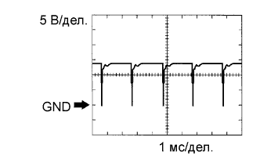

СИСТЕМА SFI > КОНТАКТЫ ECM |
| ПРОВЕРЬТЕ ECM |
Измерьте напряжение на контактах разъемов ECM.
| Номера контактов (обозначения) | Цвет проводки | Описание контактов | Условие | Заданные условия |
| G55-24 (BATT) - C36-12 (E1) | L - BR | Аккумуляторная батарея (для измерения напряжения аккумуляторной батареи и для памяти ECM) | Всегда | 11 – 14 В |
| C36-23 (+BM) - C36-12 (E1) | GR - BR | Источник питания привода дроссельной заслонки | Всегда | 11 – 14 В |
| G56-21 (IGSW) - C36-12 (E1) | W - BR | Замок зажигания | Зажигание включено (IG) | 11 - 14 В |
| G55-22 (+B) - C36-12 (E1) | W - BR | Источник питания ECM | Зажигание включено (IG) | 11 - 14 В |
| G55-23 (+B2) - C36-12 (E1) | W - BR | Источник питания ECM | Зажигание включено (IG) | 11 - 14 В |
| C35-19 (OC1+) - C35-20 (OC1-) | G-Y - L-B | Гидравлический клапан изменения фаз в сборе (для распредвала впускных клапанов ряда 1) | Зажигание включено (IG) | Формирование импульсов (см. сигнал 1) |
| C34-19 (OC2+) - C34-20 (OC2-) | L-W - L-R | Гидравлический клапан изменения фаз в сборе (для распредвала впускных клапанов ряда 2) | Зажигание включено (IG) | Формирование импульсов (см. осциллограмму 1) |
| C35-21 (OE1+) - C35-22 (OE1-) | G-B - B-R | Гидравлический клапан изменения фаз в сборе (для распредвала выпускных клапанов ряда 1) | Зажигание включено (IG) | Формирование импульсов (см. осциллограмму 1) |
| C34-21 (OE2+) - C34-22 (OE2-) | W-G - L | Гидравлический клапан изменения фаз в сборе (для распредвала выпускных клапанов ряда 2) | Зажигание включено (IG) | Формирование импульсов (см. осциллограмму 1) |
| G55-9 (MREL) - C36-12 (E1) | V - BR | Реле EFI | Зажигание включено (IG) | 11 - 14 В |
| C35-14 (VG) - C35-13 (E2G) | W-R - B-W | Датчик массового расхода воздуха | Холостой ход, рычаг переключения в положении P или N, выключатель системы кондиционирования выключен | 0,5-3,0 В |
| C35-15 (THA) - C35-7 (ETHA) | Y-B - W-R | Датчик температуры воздуха на впуске | Холостой ход, температура воздуха на впуске 20°C (68°F) | 0,5-3,4 В |
| C36-17 (THW) - C35-8 (ETHW) | R-L - W-R | Датчик температуры охлаждающей жидкости | Холостой ход, температура охлаждающей жидкости 80°C (176°F) | 0,2-1,0 В |
| C36-13 (VCTA) - C36-14 (ETA) | L - W | Питание датчика положения дроссельной заслонки (постоянное напряжение) | Зажигание включено (IG) | 4,5-5,5 В |
| C36-15 (VTA1) - C36-14 (ETA) | LG - W | Датчик положения дроссельной заслонки (для управления двигателем) | Зажигание включено (IG), дроссельная заслонка полностью закрыта | 0,5-1,1 В |
| Зажигание включено (IG), дроссельная заслонка полностью открыта | 3,3-4,9 В | |||
| C36-16 (VTA2) - C36-14 (ETA) | G-W - W | Датчик положения дроссельной заслонки (для обнаружения неисправности датчика) | Зажигание включено (IG), дроссельная заслонка полностью закрыта | 2,1-3,1 В |
| Зажигание включено (IG), дроссельная заслонка полностью открыта | 4,6 - 5,0 В | |||
| G56-6 (VPA) - G56-3 (EPA) | L - P | Датчик положения педали акселератора (для управления двигателем) | Зажигание включено (IG), педаль акселератора отпущена | 0,5-1,1 В |
| Зажигание включено (IG), педаль акселератора полностью нажата | 2,6-4,5 В | |||
| G56-5 (VPA2) - G56-1 (EPA2) | GR - W | Датчик положения педали акселератора (для обнаружения неисправности датчика) | Зажигание включено (IG), педаль акселератора отпущена | 1,2-2,0 В |
| Зажигание включено (IG), педаль акселератора полностью нажата | 3,4 - 5,0 В | |||
| G56-4 (VCPA) - G56-3 (EPA) | LG - P | Источник питания датчика положения педали акселератора (для VPA) | Зажигание включено (IG) | 4,5-5,5 В |
| G56-2 (VCP2) - G56-1 (EPA2) | R - W | Источник питания датчика положения педали акселератора (для VPA2) | Зажигание включено (IG) | 4,5-5,5 В |
| C37-17 (HA1A) - C37-16 (E04) C37-19 (HA2A) - C37-16 (E04) | R-L - W-B B-W - W-B | Подогреватель датчика состава топливовоздушной смеси | Холостой ход | Менее 3,0 В |
| Зажигание включено (IG) | 11 - 14 В | |||
| C36-1 (A1A+) - C36-12 (E1) | P - BR | Датчик состава топливовоздушной смеси | Зажигание включено (IG) | 3,3 В* |
| C36-2 (A1A-) - C36-12 (E1) | L - BR | Датчик состава топливовоздушной смеси | Зажигание включено (IG) | 3,0 В* |
| C36-7 (A2A+) - C36-12 (E1) | Y - BR | Датчик состава топливовоздушной смеси | Зажигание включено (IG) | 3,3 В* |
| C36-8 (A2A-) - C36-12 (E1) | L - BR | Датчик состава топливовоздушной смеси | Зажигание включено (IG) | 3,0 В* |
| C37-12 (HT1B) - C37-11 (E03) C37-13 (HT2B) - C37-11 (E03) | L-R - W-B L - W-B | Подогреватель подогреваемого кислородного датчика | Холостой ход | Менее 3,0 В |
| Зажигание включено (IG) | 11 - 14 В | |||
| C34-2 (OX1B) - C34-1 (EX1B) C34-4 (OX2B) - C34-3 (EX2B) | B - L-W B - GR | Подогреваемый кислородный датчик | Частота вращения коленчатого вала двигателя в течение 2 минут после прогрева датчика поддерживается равной 2500 об/мин | Формирование импульсов (см. сигнал 2) |
| C37-6 (#10) - C37-14 (E01) C37-1 (#20) - C37-14 (E01) C37-7 (#30) - C37-14 (E01) C37-2 (#40) - C37-14 (E01) C37-8 (#50) - C37-14 (E01) C37-3 (#60) - C37-14 (E01) | L - W-B B - W-B R - W-B G - W-B Y - W-B R-L - W-B | Топливная форсунка в сборе | Зажигание включено (IG) | 11 - 14 В |
| Холостой ход | Формирование импульсов (см. сигнал 3) | |||
| C35-11 (KNK1) - C35-12 (EKNK) C35-5 (KNK2) - C35-6 (EKN2) | B - W G - R | Датчик детонации | Частота вращения коленчатого вала двигателя после прогрева двигателя поддерживается равной 4000 об/мин | Формирование импульсов (см. сигнал 4) |
| C34-15 (VCV1) - C36-12 (E1) | P-L - BR | Источник питания датчика (заданное напряжение) | Зажигание включено (IG) | 4,5-5,5 В |
| C34-16 (VCV2) - C36-12 (E1) | LG-B - BR | Источник питания датчика (заданное напряжение) | Зажигание включено (IG) | 4,5-5,5 В |
| C34-9 (VV1+) - C34-10 (VV1-) | R - G | Датчик положения распредвала (на впуске ряда 1) | Холостой ход | Формирование импульсов (см. осциллограмму 5) |
| C34-12 (VV2+) - C34-11 (VV2-) | G - GR | Датчик положения распредвала (на впуске ряда 2) | Холостой ход | Формирование импульсов (см. осциллограмму 5) |
| C34-13 (EV1+) - C34-14 (EV1-) | W-R - R-B | Датчик положения распредвала (на выпуске ряда 1) | Холостой ход | Формирование импульсов (см. осциллограмму 6) |
| C34-18 (EV2+) - C34-17 (EV2-) | L - P | Датчик положения распредвала (на выпуске ряда 2) | Холостой ход | Формирование импульсов (см. осциллограмму 6) |
| C34-6 (NE+) - C34-5 (NE-) | B - W | Датчик положения коленчатого вала | Холостой ход | Формирование импульсов (см. сигнал 5) |
| C36-24 (IGT1) - C36-12 (E1) C36-25 (IGT2) - C36-12 (E1) C36-26 (IGT3) - C36-12 (E1) C36-27 (IGT4) - C36-12 (E1) C36-28 (IGT5) - C36-12 (E1) C35-25 (IGT6) - C36-12 (E1) | R-Y - BR R-L - BR G-B - BR G-W - BR GR - BR L - BR | Катушка зажигания в сборе (сигнал зажигания) | Холостой ход | Формирование импульсов (см. сигнал 7) |
| C36-6 (IGF1) - C36-12 (E1) | G-R - BR | Катушка зажигания в сборе (сигнал подтверждения зажигания) | Зажигание включено (IG) | 4,5-5,5 В |
| Холостой ход | Формирование импульсов (см. сигнал 7) | |||
| C36-18 (PRG) - C36-12 (E1) | P - BR | Электровакуумный клапан продувки | Зажигание включено (IG) | 11 - 14 В |
| Холостой ход | Формирование импульсов (см. сигнал 8) | |||
| G55-18 (SPD) - C36-12 (E1) | R - BR | Сигнал скорости автомобиля от щитка приборов в сборе | Во время движения при скорости 20 км/час (12 миль в час) | Формирование импульсов (см. сигнал 9) |
| G56-10 (STA) - C36-12 (E1) | W - BR | Сигнал стартера | Прокручивание коленчатого вала стартером | 5,5 В или более |
| C35-2 (NSW) - C36-12 (E1) | B - BR | Управление реле стартера | Зажигание включено (IG) | Менее 1,5 В |
| Прокручивание коленчатого вала стартером | Не менее 6,0 В | |||
| G56-18 (STP) - C36-12 (E1) | V - BR | Выключатель стоп-сигналов | Педаль тормоза нажата | 7,5-14 В |
| Педаль тормоза отпущена | Менее 1,5 В | |||
| G55-8 (ST1-) - C36-12 (E1) | B - BR | Выключатель стоп-сигналов (противоположно напряжению на контакте STP) | Зажигание включено (IG), Педаль тормоза нажата | менее 1,5 В |
| Зажигание включено (IG), Педаль тормоза отпущена | 7,5-14 В | |||
| C37-20 (M+) - C37-10 (ME01) | P - W-B | Привод дроссельной заслонки | Холостые обороты при прогретом двигателе | Формирование импульсов (см. осциллограмму 10) |
| C36-29 (M-) - C37-10 (ME01) | L - W-B | Привод дроссельной заслонки | Холостые обороты при прогретом двигателе | Формирование импульсов (см. сигнал 11) |
| G56-8 (FC) - C36-12 (E1) | G - BR | Управление топливным насосом | Холостой ход | Менее 1,5 В |
| G55-3 (FPC) - C36-12 (E1) | G - BR | Управление топливным насосом | Зажигание включено (IG) | Менее 1,5 В |
| G56-26 (DI) - C36-12 (E1) | GR - BR | Управление топливным насосом | Зажигание включено (IG) | 0-3,0 В |
| C35-16 (PSP) - C36-12 (E1) | V - BR | Контактный датчик давления жидкости для механизма рулевого управления с усилителем | Зажигание включено (IG) | 0,5-4,5 В |
| G55-1 (AIP) - C35-7 (ETHA) | V - W-R | Сигнал давления в вспомогательной системе подачи воздуха в нейтрализатор | Зажигание включено (IG) | 3,0-3,6 В |
| G55-2 (AIP2) - C35-7 (ETHA) | B - W-R | Сигнал давления в вспомогательной системе подачи воздуха в нейтрализатор | Зажигание включено (IG) | 3,0-3,6 В |
| C35-30 (AIDI) - C36-12 (E1) | G - BR | Клапан переключения подачи воздуха для вспомогательной системы подачи воздуха в нейтрализатор | Система подачи воздуха в нейтрализатор работает | Формирование импульсов (см. сигнал 12) |
| C34-26 (AIRV) - C36-12 (E1) | P - BR | Клапан переключения подачи воздуха для вспомогательной системы подачи воздуха в нейтрализатор | Зажигание включено (IG) | 11 - 14 В |
| C35-23 (AIRP) - C36-12 (E1) | GR - BR | Клапан переключения подачи воздуха для вспомогательной системы подачи воздуха в нейтрализатор | Зажигание включено (IG) | 11 - 14 В |
| C36-21 (AIR1) - C36-12 (E1) | L - BR | Клапан переключения подачи воздуха для вспомогательной системы подачи воздуха в нейтрализатор | Зажигание включено (IG) | 11 - 14 В |
| C36-20 (HAI1) - C36-12 (E1) | W - BR | Подогреватель воздушного нагнетателя для вспомогательной системы подачи воздуха в нейтрализатор | Подогреватель AI работает | 11-14 В |
| G55-13 (W) - C36-12 (E1) | V - BR | MIL | Зажигание включено (IG) | Менее 1,5 В |
| Холостой ход | 11 - 14 В | |||
| G56-28 (TC) - C36-12 (E1) | V - BR | Контакт TC разъема DLC3 | Зажигание включено (IG) | 11 - 14 В |
| G56-29 (TACH) - C36-12 (E1) | P - BR | Частота вращения коленчатого вала двигателя | Холостой ход | Формирование импульсов (см. сигнал 13) |
| C35-28 (ALT) - C36-12 (E1) | L - BR | Генератор | Зажигание включено (IG) | 11 - 14 В |
| G56-32 (CANH) - C36-12 (E1) | R - BR | Линия передачи данных CAN | Зажигание включено (IG) | Формирование импульсов (см. сигнал 14) |
| G56-31 (CANL) - C36-12 (E1) | W - BR | Линия передачи данных CAN | Зажигание включено (IG) | Формирование импульсов (см. сигнал 15) |
| G56-34 (CANP) - C36-12 (E1) | BR - BR | Линия передачи данных CAN | Зажигание включено (IG) | Формирование импульсов (см. сигнал 14) |
| G56-33 (CANN) - C36-12 (E1) | GR - BR | Линия передачи данных CAN | Зажигание включено (IG) | Формирование импульсов (см. сигнал 15) |
Осциллограмма 1
| Схематическое обозначение | Между OC1+ и OC1- Между OC2+ и OC2- Между OE1+ и OE1- Между OE2+ и OE2- |
| Рабочий диапазон диагностического прибора | 5 В/дел., 1 мс/дел. |
| Режим | Холостой ход |
 |
Осциллограмма 2
| Схематическое обозначение | Между OX1В и EX1В Между OX2B и EX2B |
| Рабочий диапазон диагностического прибора | 0,2 В/дел., 200 мс/дел. |
| Режим | Частота вращения коленчатого вала двигателя в течение 2 минут после прогрева датчика поддерживается равной 2500 об/мин |
Осциллограмма 3
| Схематическое обозначение | Между #10 (до #60) и E01 |
| Рабочий диапазон диагностического прибора | 20 В/дел., 20 мс/дел. |
| Условие | Холостой ход |
Осциллограмма 4
| Схематическое обозначение | Между KNK1 и EKNK Между KNK2 и EKN2 |
| Рабочий диапазон диагностического прибора | 1 В/дел., 1 мс/дел. |
| Режим | Частота вращения коленчатого вала двигателя после прогрева двигателя поддерживается равной 4000 об/мин |
Осциллограмма 5
| Схематическое обозначение | Между NE+ и NE- Между VV1+ и VV1- Между VV2+ и VV2- |
| Рабочий диапазон диагностического прибора | 5 В/дел., 20 мс/дел. |
| Режим | Холостой ход |
Осциллограмма 6
| Схематическое обозначение | Между NE+ и NE- Между EV1+ и EV1- Между EV2+ и EV2- |
| Рабочий диапазон диагностического прибора | 5 В/дел., 20 мс/дел. |
| Режим | Холостой ход |
Осциллограмма 7
| Схематическое обозначение | Между IGT (1-6) и E1 Между IGF1 и E1 |
| Рабочий диапазон диагностического прибора | 2 В/дел., 20 мс/дел. |
| Режим | Холостой ход |
Осциллограмма 8
| Схематическое обозначение | Между PRG и E1 |
| Рабочий диапазон диагностического прибора | 5 В/дел., 50 мс/дел. |
| Условие | Холостой ход |
Осциллограмма 9
| Схематическое обозначение | Между SPD и E1 |
| Рабочий диапазон диагностического прибора | 2 В/дел., 20 мс/дел. |
| Режим | Во время движения при скорости 20 км/час (12 миль в час) |
Осциллограмма 10
| Схематическое обозначение | Между M+ и ME01 |
| Рабочий диапазон диагностического прибора | 5 В/дел., 1 мс/дел. |
| Режим | Холостой ход при прогретом двигателе |
|  |
Осциллограмма 11
| Схематическое обозначение | Между M- и ME01 |
| Рабочий диапазон диагностического прибора | 5 В/дел., 1 мс/дел. |
| Режим | Холостой ход при прогретом двигателе |
Осциллограмма 12
| Схематическое обозначение | Между AIDI и E1 |
| Рабочий диапазон диагностического прибора | 5 В/дел., 20 мс/дел. |
| Режим | Проверка системы с помощью портативного диагностического прибора (проверка подачи воздуха в нейтрализатор) |
Осциллограмма 13
| Схематическое обозначение | Между TACH и E1 |
| Рабочий диапазон диагностического прибора | 5 В/дел., 10 мс/дел. |
| Режим | Холостой ход |
Осциллограмма 14
| Схематическое обозначение | Между CANH и E1 Между CANP и E1 |
| Рабочий диапазон диагностического прибора | 1 В / дел., 10 мкс / дел. |
| Условие | Двигатель остановлен и зажигание включено (IG) |
Осциллограмма 15
| Схематическое обозначение | Между CANL и E1 Между CANN и E1 |
| Рабочий диапазон диагностического прибора | 1 В / дел., 10 мкс / дел. |
| Условие | Двигатель остановлен и зажигание включено (IG) |